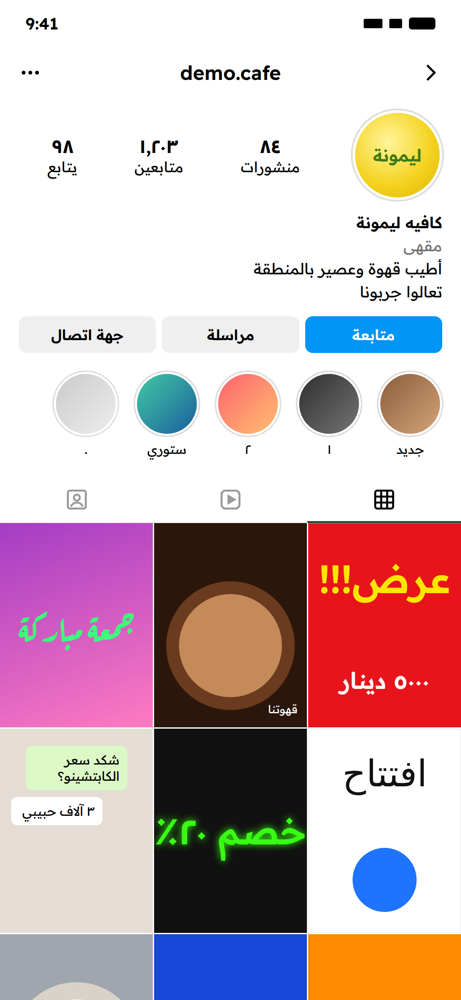

مراجعة مجانية
for your pageلصفحتك
أول ٣ يدزون يوزر صفحتهم،
أسويلهم مراجعة مجانية

Layer by layerطبقة فوق طبقة
Follow@allawi.psd
أول ٣ يدزون يوزر صفحتهم،
أسويلهم مراجعة مجانية

الجولة الجاية الأسبوع الجاي،
تابعني حتى لا تفوتك